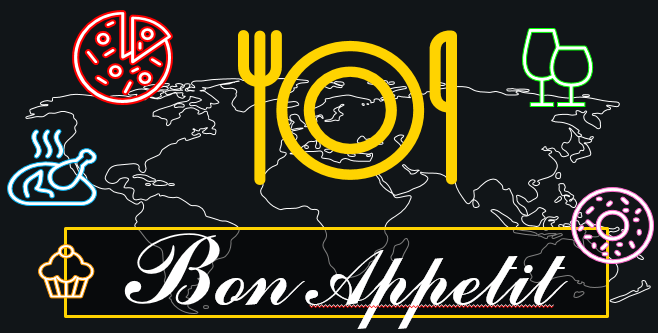

Phone No. 022-28908666, 022-55508787 Email: FoodRecepies123@gmail.com Website: www.FoodRecepies.in
Courses
Frequently Asked Questions ⭐ Is it difficult to learn how to cook? No. Cooking is not difficult to learn. If you have a special interest in identifying the ingredients of a dish you relish, cooking can prove to be easy and enjoyable for you. For those have never even made a cup of tea, cooking might seem challenging, but with practice, one can master his/her culinary skills. ⭐ How can I improve my cookery skills and become a good cook? The best way to improve your cooking skills is to practise all the different processes involved in cooking. You can: -Identify and memorise the names of all lentils, spices and flour types, and understand their flavours, colours, texture and aroma -Improve your knife skills but chopping an extra onion -Practise cutting vegetables into pieces of the same size -Learn to crack eggs correctly -Learn to prepare dishes without messing up your kitchen -Understand the nutritional value of ingredients -Start with simple recipes if you’re a beginner -Always make sure you have all the ingredients of the dish you want to cook before beginning to prepare -Join a culinary arts academy to master cooking skills ⭐ Can I consider cooking as a career option? With the foodservice sector ruling the world, the demand for good chefs is rapidly increasing. A person with fine culinary skills can make a great career for himself/herself. Some of the most popular career options are: -Executive chef -Banquet chef -Pastry chef -Food production manager -Restaurant owner -Catering director, etc ⭐ What is the best institute to learn cooking online? Online classes for cooking are a part and parcel of the modern digital era. In India, there are various resources available on the internet. For those who wish to learn cooking and master their culinary skills, it is best to get enrolled in an institute that offers an online cooking course. To find the course that suits your learning requirements best, visit UrbanPro. ⭐ What is the fee for online cooking classes in India? The fee for online cookery classes depends upon various aspects such as the number of live sessions, videos, tutor, etc. Using UrbanPro, you can browse some of the best online cooking classes and institutes.
2. Cource
Udemy
This course includes:
- 4 hours on-demand video
- 44 downloadable resources
- Full lifetime access
- Access on mobile and TV
- Certificate of completion
REQUIREMENTS
~All you need is a kitchen for cooking up your curries and having a fantastic
time learning to cook Indian food
DESCRIPTION
Hi, welcome to my course on Indian cooking . Love Indian food? Want to
make flavorful Indian curries? Then join me in 60 exciting episodes from
SizzlingPots Indian Culinary World, and I will prove, that it is not hard
to cook Indian food.
I will teach you how to make delicious dishes in your own kitchen and at your own pace. If you are a beginner, then I will show you how to master Indian
cooking. If you’re an expert cook, the techniques and methods I have shown here will let you cook smarter, faster, and healthier.
1. Cource

UrbanPro
Join Live and Interactive Online Classes with the best Tutors
Looking to teach?
Join UrbanPro and connect with more than 55 Lakh students on the platform.
Create a strong profile and grow your network.
About UrbanPro.com Terms of Use Privacy Policy
Bangalore,Chennai ,Delhi ,Hyderabad, Mumbai, Pune, Kolkata,
Gurgaon ,Ahmedabad Noida
UrbanPro.com is India's largest network of most trusted tutors and institutes.
Over 55 lakh students rely on UrbanPro.com, to fulfill their learning
requirements across 1,000+ categories. Using UrbanPro.com, parents, and
students can compare multiple Tutors and Institutes and choose the one that best suits their requirements. More than 7.5 lakh verified Tutors and Institutes
are helping millions of students every day and growing their tutoring business on UrbanPro.com.
ThinkVidya Learning Pvt Ltd © 2010-2021All Rights Reserved
As a nation, we just love our food and we are very perticular about some taste and ingredients, with a healthy mist. Our flavours are distinctive and our spices incredible. The aromas wafting out of regular home kitchens can compete with those from the fanciest fine-dining restaurants around the globe. Our food is as rich as our food traditions. And just like our people, our food is diverse too. We have curries from the north and stews from the south. We have egg-dal from Meghalaya and dal-baati from Rajasthan. There are fried snacks like samosas and steamed ones like khandvi. We have pickles made from several types of vegetables and breads made with almost every grain and millet you could possibly think of. Every dish, every recipe tells a story of its own. From imbibing new cultures to adapting to new ingredients and making them your own, India's history and geographical position has a lot to do with the incredible variety of dishes we enjoy.We as Indians are great foodie and very picky about our food taste, ingredients for the dish to turn out healthy. As many of you would know, India was a part of many important trade routes in history. Travelers from far off seas would bring produce and spices known to them. Similarly, they would carry from here our local produce and introduce them to other places further along the trade route. Many food items we love were introduced to us this way. Here's a list of some of our favourites food with its recipes that were not locally available or produced to begin with.
Following click will take you to the Recepies you ever asked for =>